A new layer of spend, with no clear owner.
AI adoption introduces a new layer of infrastructure spend. As teams experiment with models, providers, applications and internal AI services, it gets harder to see where that spend comes from and who is responsible for it.
This project explores how OneLens can help teams move beyond a high-level view of AI cost, towards one connected experience for observing usage, investigating callers, allocating spend and applying governance.
Make AI usage and cost understandable at the level where teams can investigate it, connect it to business ownership and take meaningful action.
A provider bill doesn't say who spent it.
AI costs are hard to interpret from a provider-level bill. A useful view connects the cost to the activity behind it: the provider, model, key or caller, application, team and business context.
Without those connections, teams struggle to answer questions like these:
- What drives spend?Which applications, users or services are driving AI spend?
- Is it expected?Where is usage coming from, and should it be?
- Who owns it?Which business team or function should own the cost?
- How to control it?How can teams apply guardrails without disrupting legitimate usage?
The opportunity was to bring these questions into one connected experience, rather than treating cost visibility, ownership and governance as separate tasks.
Four connected jobs.
I approached the experience as four jobs that build on each other: see the spend, understand its source, assign accountability and manage it.
- ObserveEstablish a clear view of AI usage and cost.
- InvestigateIdentify the callers and activity behind the numbers.
- AllocateConnect usage to business hierarchy and ownership.
- GovernDefine and manage controls on usage.
These are not steps users must complete in order. They're the narrative of the experience, and each one is reachable from the others.
Make AI usage and cost visible.
The starting point is one view of AI usage and cost, so teams can understand the scale and spread of activity before drilling into individual callers.
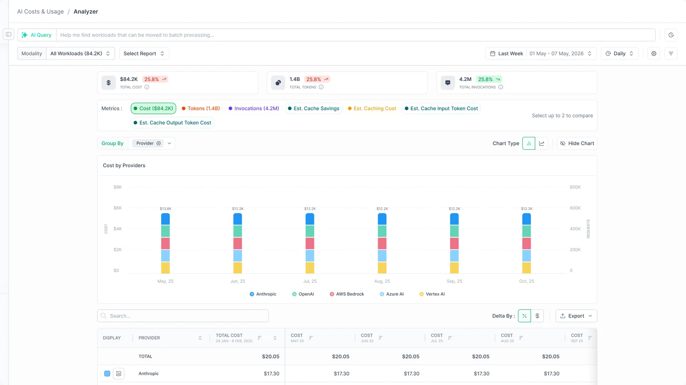
- OrientTotal cost, tokens and invocations, each with change against the previous period.
- CompareMetric chips for cost, tokens, invocations and estimated cache costs; up to two at once.
- NarrowModality, report, date range and granularity filters, plus an AI Query bar for plain-language questions.
- PivotGroup by provider, caller and other dimensions, as a chart or a table with change by % or $.
The overview is a starting point for exploration rather than a dead-end report. Grouping the same view by caller moves straight into investigation.
Connect spend to its source.
Aggregate cost shows that something is happening; teams need more context to understand why. The caller is the useful level of detail: the key, user or service account behind each request.
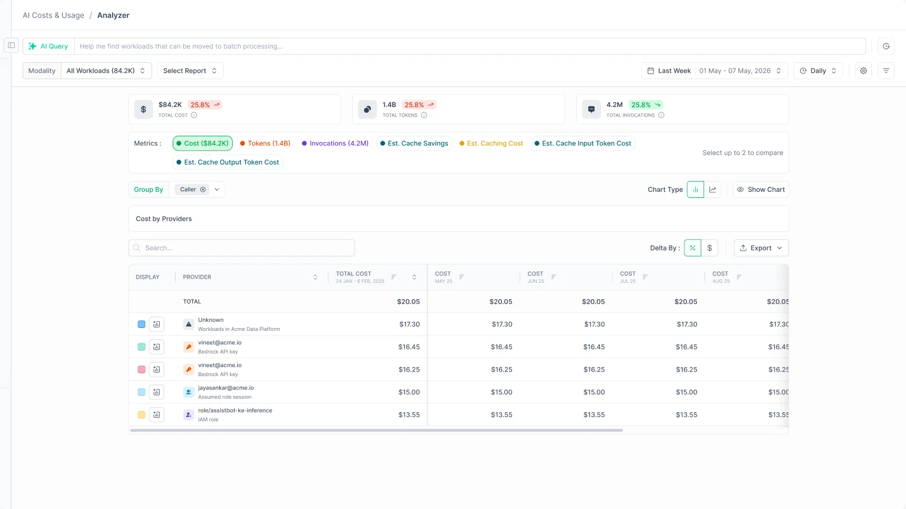
Keys & Caller Inventory
The inventory brings every AI caller into one table: API keys, SSO users and service accounts, with the hierarchy node it belongs to, the provider, the key's status, cost and the policies that apply. Summary cards count keys, users, service accounts and callers with no owner, and each one filters the table.
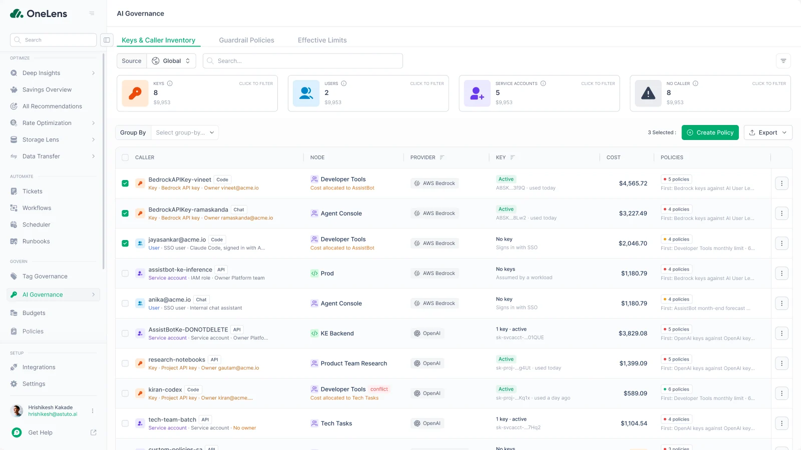
Caller details
Opening a caller shows its full context in a side panel: users, models and cost, key metadata such as provider, workspace, status and last use, and a usage and cost trend. Tabs cover models, anomalies, budgets and policies. From here, a user can set a budget or create a policy for that caller.
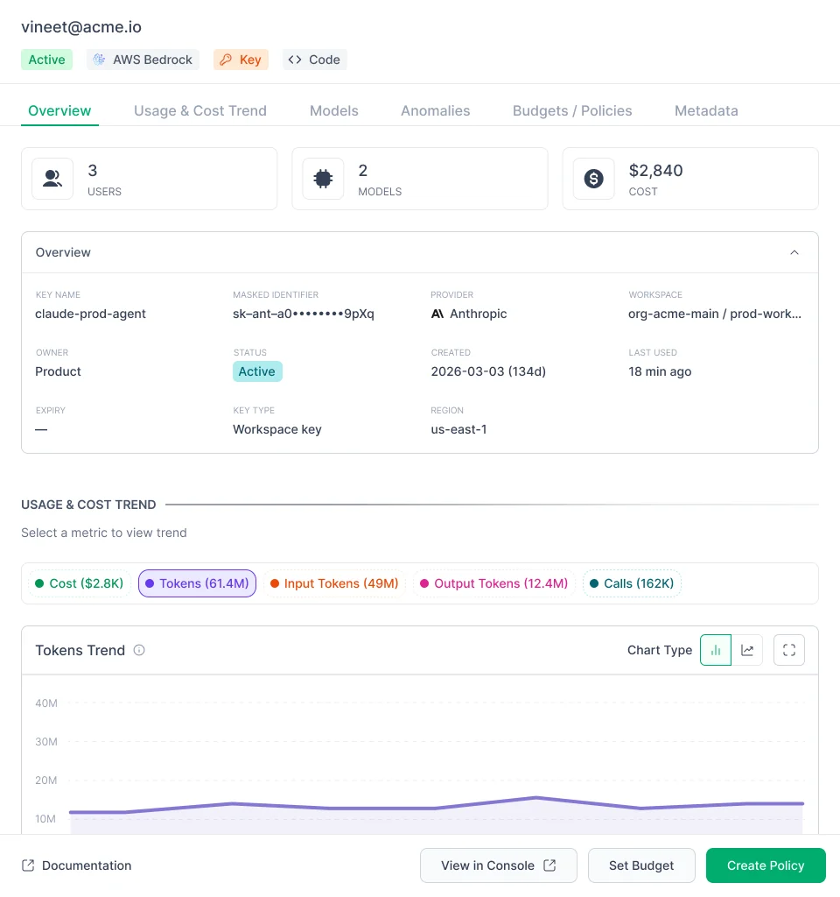
Connect AI activity to business ownership.
Visibility becomes more useful when teams know who is responsible for the spend. The experience maps AI callers onto the business hierarchy that OneLens already uses for cost allocation.
A hierarchy can now serve two purposes: cost allocation, which maps cloud resources to cost centres, and AI mapping, which maps AI keys and callers for guardrail policies. Each cost centre gets a Callers Mapping tab with rules, such as "key name contains Codex", and shows which callers match.
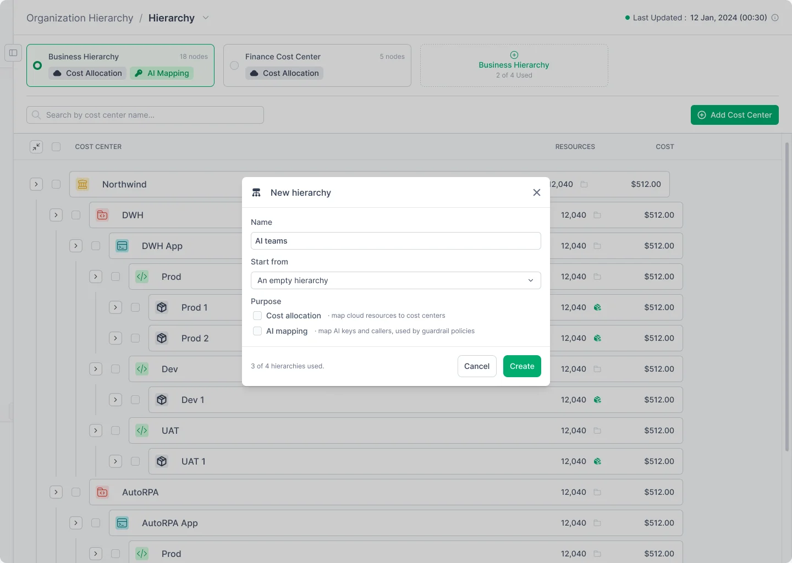
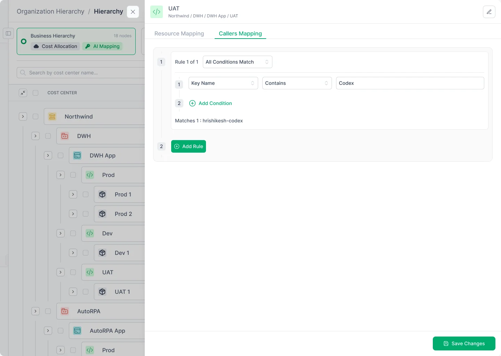
Allocation shouldn't feel separate from observability. In the inventory, each caller shows its hierarchy node and where its cost is allocated, and flags conflicts, so business ownership is part of understanding the cost rather than a separate reporting exercise.
Bring controls closer to usage.
Once teams can see AI activity and know where it belongs, the next job is deciding how it should be managed. Guardrail policies sit in the same AI Governance area as the inventory.
Guardrail policies
The policy list shows each policy's scope, condition, the actions at its top threshold (notify, require approval, disable a key), how many units are breaching and its status. Summary cards count policies, open violations and policies waiting for approval.
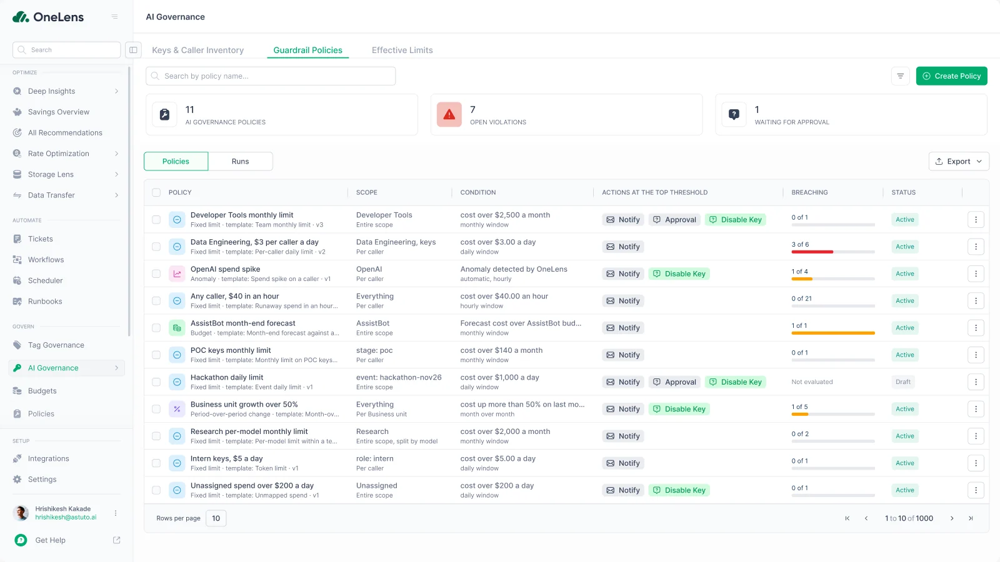
Creating a policy
Policy creation is a four-step flow with a live preview beside it. The preview updates as the policy takes shape, and a Policy YAML tab shows the same policy for technical users.
-
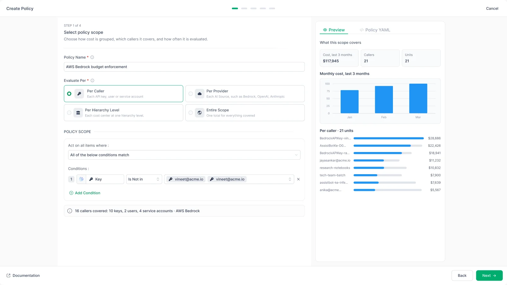
Step 1 of 4Select policy scope
Choose how cost is grouped: per caller, per provider, per hierarchy level or one total. Conditions narrow which callers are covered, and the preview shows the cost, callers and units in scope.
-
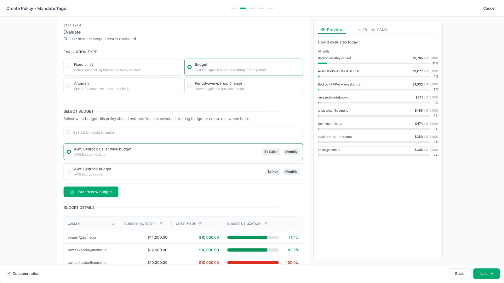
Step 2 of 4Evaluate
Pick how the scoped cost is judged: a fixed limit, a prepared budget, an anomaly or growth against a previous period. A budget can be selected or created without leaving the flow.
-
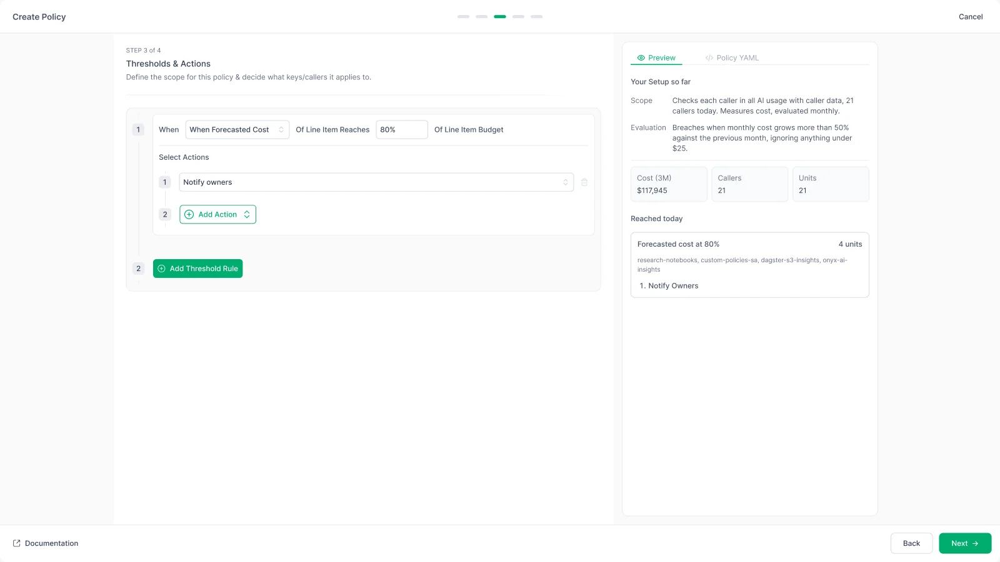
Step 3 of 4Thresholds & actions
Set when the policy acts, such as forecasted cost reaching 80% of the budget, and what happens next. Several threshold rules can stack, each with its own actions.
-
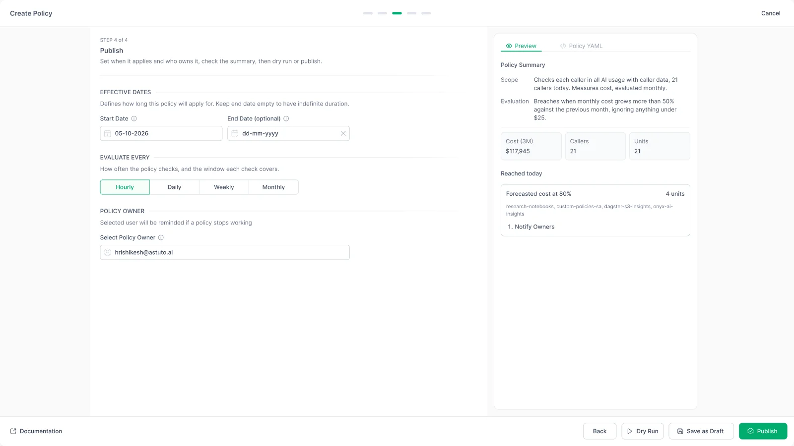
Step 4 of 4Publish
Set effective dates, how often the policy checks and who owns it. The summary on the right restates the policy in plain language before it goes live.
Dry run before it goes live
A dry run checks the policy against the last three months of data and shows, for each unit, the breach line, latest and highest cost, and whether it would have breached and what would have run. Nothing is sent and nothing changes until the user publishes.
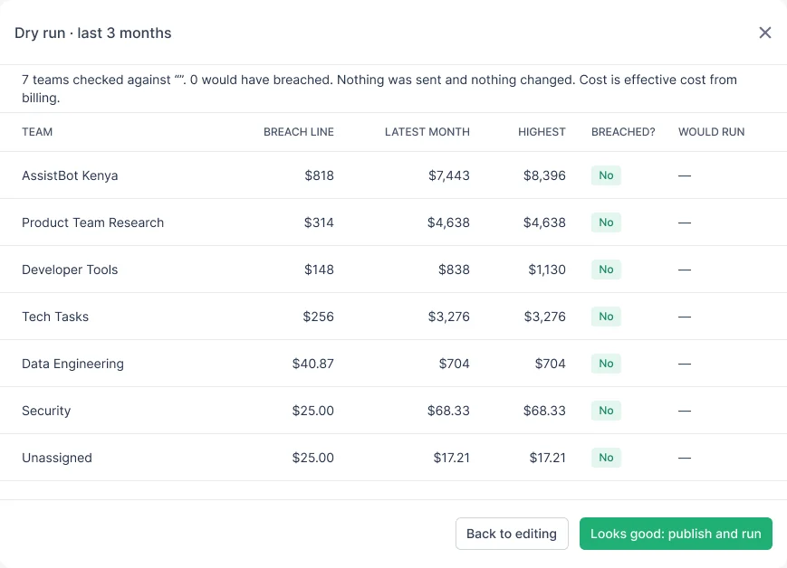
After publishing
Each policy has its own page with its scope, measure, evaluation and actions in plain language, today's evaluation units against the limit, and tabs for runs, overrides and history. The Runs view lists every evaluation and the actions it took, and Effective Limits shows every limit that applies to each caller.
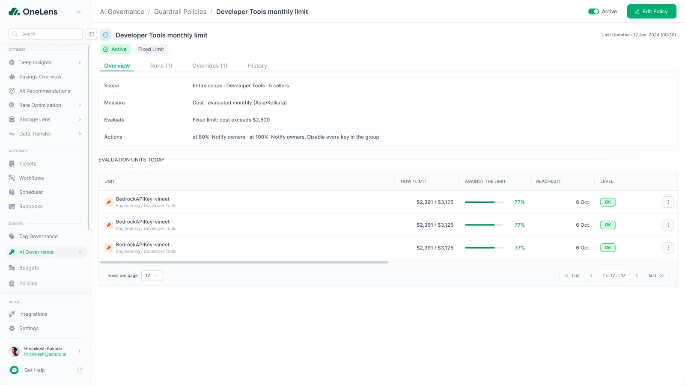
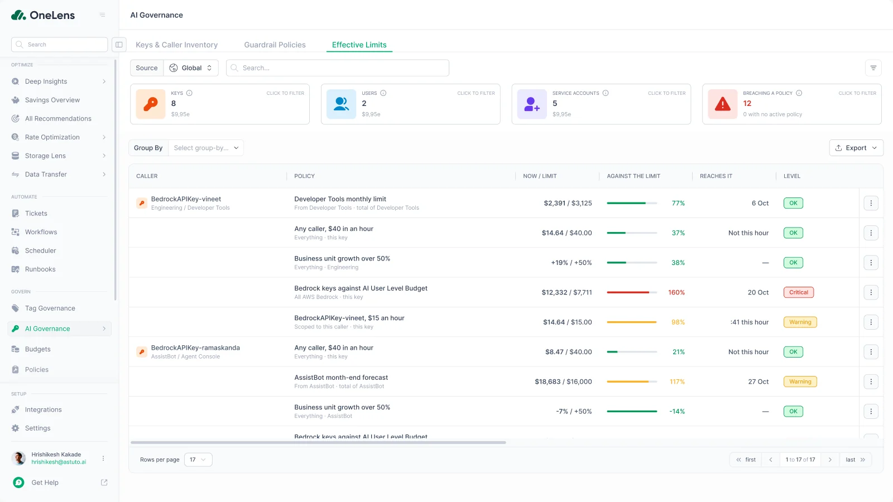
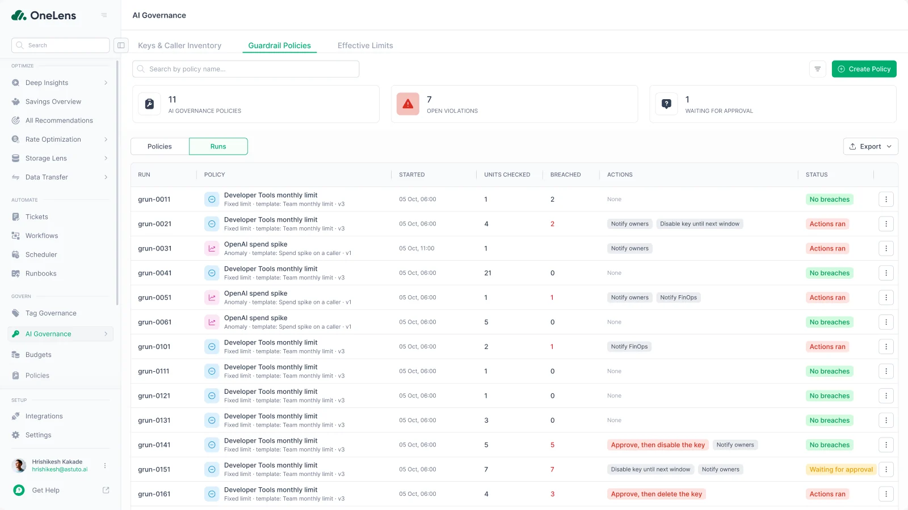
See the spend, find the source, know the owner, manage the usage.
The strength of the concept is the relationship between its parts. A user can start from a high-level view of AI cost, narrow down to a caller, understand where it belongs and move into governance.
- See the spendThe analyzer shows cost, tokens and invocations by provider.
- Identify the sourceGroup by caller, or open the inventory to see each key, user and service account.
- Understand ownershipEach caller carries its hierarchy node and where its cost is allocated.
- Manage usageCreate a policy from selected callers, or from a caller's detail panel.
What shaped the decisions.
Technical activity in business context
Showing caller identity alongside provider, cost and hierarchy reduces the need to connect information across separate views.
Scanning and investigation
Summary cards help users orient; searchable, filterable and groupable tables support focused investigation.
Governance next to observability
Policies live in the same area as the inventory, and can be created straight from the callers they apply to.
Progressive disclosure
Tables lead to side panels and detail pages; the policy builder's live preview and YAML tab reveal depth only when needed.
Design for the relationship between systems and decisions.
A cost dashboard alone can't explain ownership, and a governance interface alone can't give the context needed to make good decisions. The experience becomes coherent when usage, caller identity, business hierarchy and controls are designed as parts of one system.
It also showed the value of designing at several levels of detail: a clear overview for orientation, structured tables for exploration and focused configuration flows for complex tasks.
One connected experience for AI cost.
I designed a connected AI cost observability and governance experience for OneLens, covering the workflows in the final product designs.
Analyzer and caller inventory
AI cost by provider and by caller, with an inventory of every key, user and service account and a detail panel for each.
AI mapping on the hierarchy
Hierarchies that map AI callers to cost centres with rules, alongside existing cost allocation.
Guardrail policies
A four-step policy builder with a live preview and dry run, plus policy pages, runs and effective limits.